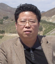

创新团队带头人简介
关伟教授，男，满族，1959年11月生于辽宁省岫岩县。1982年毕业于辽宁师范大学地理系，博士。现任辽宁师范大学学报编辑部主任，城市与环境学院教授、博士生导师。
关伟主要从事区域发展与产业经济等方面的研究，主持国家863计划项目“大连城市水环境质量改善技术与综合示范”（子课题六）、国家软科学项目“北方沿海城市率先实现农业现代化战略研究”、辽宁省科技计划项目“辽宁省生物技术与医药产业发展规划研究”、辽宁省教育厅人文社会科学研究项目“辽宁省高新技术企业技术创新能力评价”、大连市发改委计划项目“大连市地区经济格局变动分析”、大连市科技计划项目“大连市生物技术与医药产业现状分析及发展模式研究”等24项，参与主持国家和省部级项目10余项；主编高校教材5部，参与编著高校教材等10余部；在《中国软科学》、《地理研究》、《自然资源学报》、《人文地理》、《科学学与科学技术管理》、《东北大学学报》等刊物发表“区域水资源与经济社会耦合系统可持续发展的量化分析”、“企业技术进步实现形式与路径选择”、“区域高新技术产业发展的集群网络化模式”、“基于市域范围的高新技术产业布局模式研究”等学术论文100余篇。